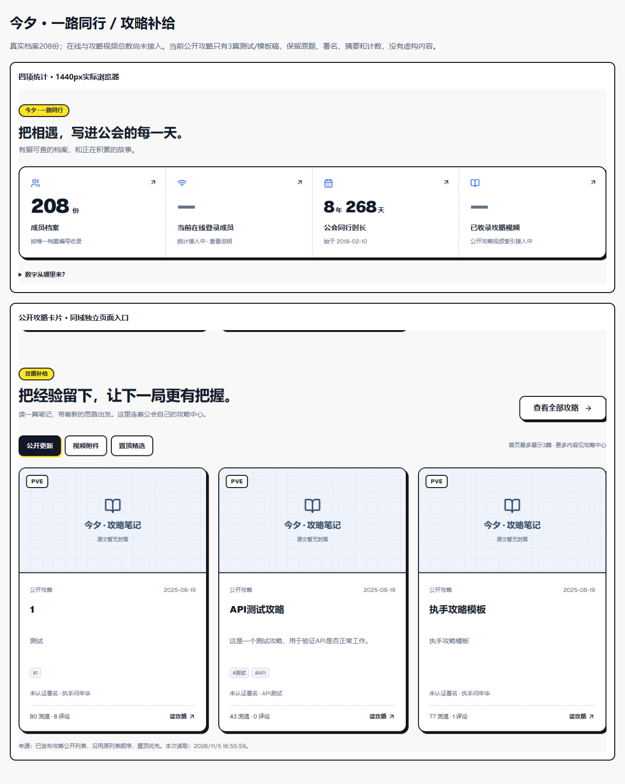
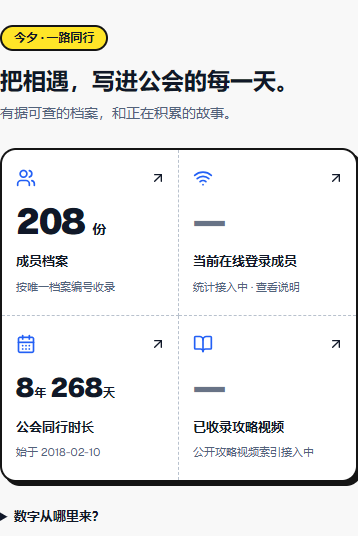
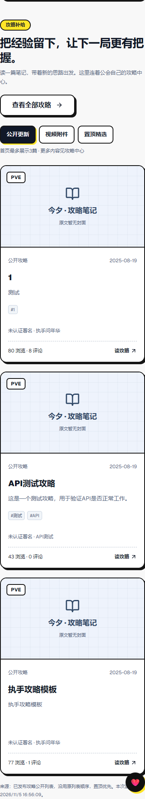
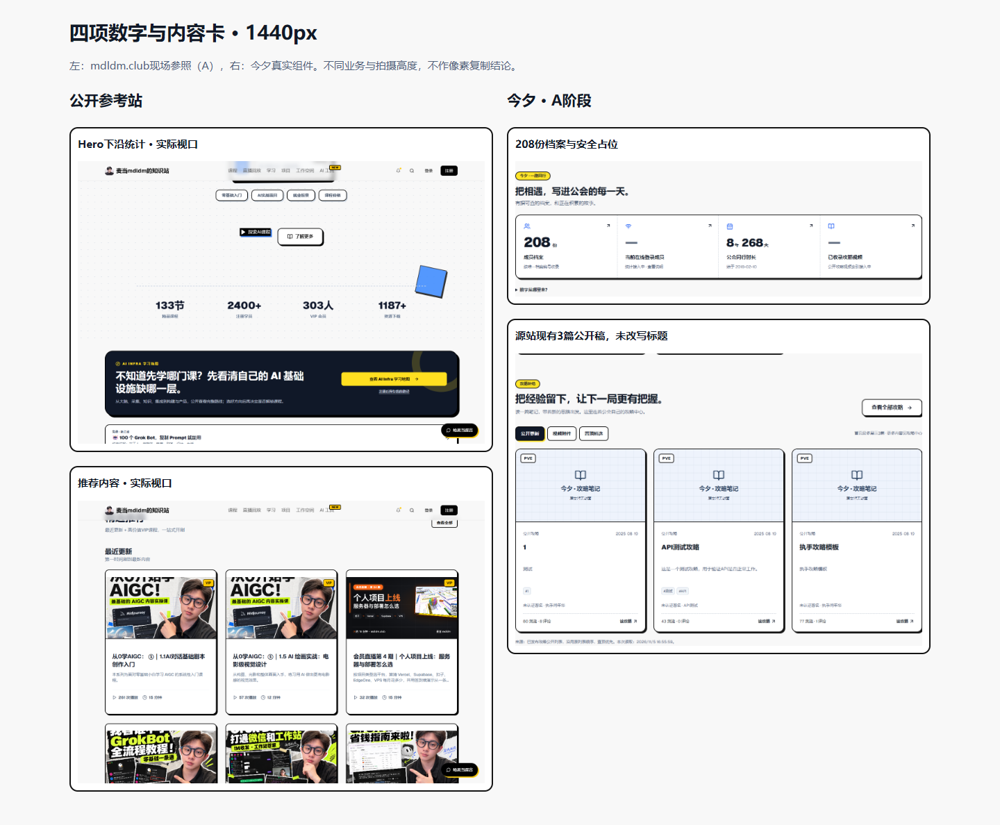
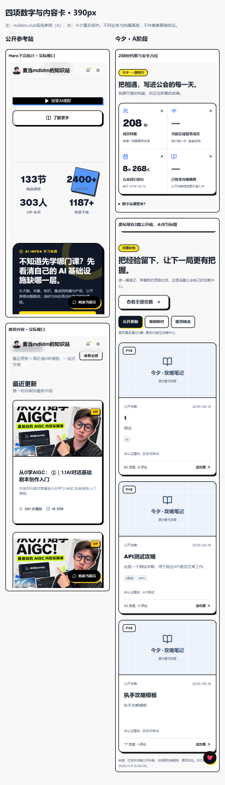

005S A阶段 · 未合并 / 未上线真实档案，公开攻略，可信统计的起点。
在线人数和全站攻略视频总数仍为—。此预览攻略为匿名公开GET的脱敏快照，留言为合成数据，禁止生产写入。B阶段会话/心跳/聚合SQL尚未实施。构建通过；TypeScript保留28条历史错误，无新增；Lint/API原命令未通过。
可复核资料
新增JS约14.3KB（计算gzip4.9KB）、CSS8KB。正常快照加载CLS修正为0；慢网LCP仍约3.1秒。部分实验出现既有图片重复下载，报告如实列为风险，不能声称性能全面达标。
今夕新增模块概览
390px四项统计
390px公开攻略卡片
桌面：参考 / 今夕
手机：参考 / 今夕
四种宽度与状态
合成媒体状态图只证明UI，不证明真实上传或视频存量；完整页保留原入口，组件特写的拍摄调整见closeup-results.json。